Building an AI skill and a workflow that uses it, so the Pub Quiz Manager can generate its own rounds, questions and answers.
We've already built the Pub Quiz Manager and had Build Agent generate some example data for us. Now we want to use the AI capability of the platform to actually build out a quiz — rounds, questions, answers — on demand.
In ServiceNow we can build a skill that generates questions and answers for us. We can then embed that skill in workflows, buttons, and even make it agentic. This walk-through covers creating the skill, tuning its prompt, and wiring it into a catalogue-item-driven flow.
Section 01 — Create a SkillBuilding our first AI skill
A skill in ServiceNow is the basic building block for AI. It's our ability to interact with the LLM the way you would if you were using a tool like Claude or Gemini — we give the AI a task, some data, and we ask for an output.
Log into your ServiceNow instance and navigate to Skill Kit, then click Home.
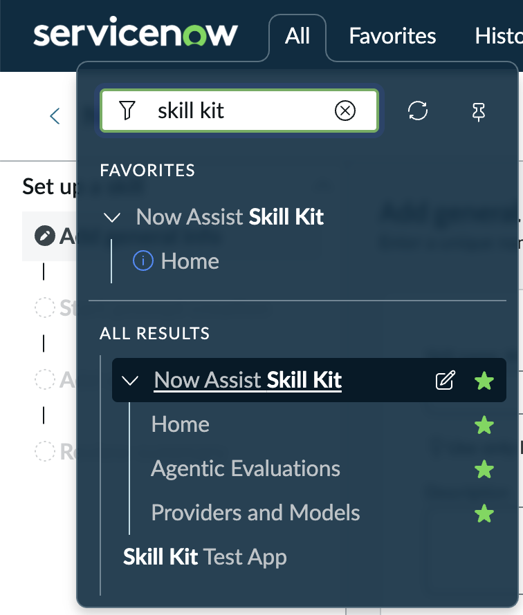
Skill Kit — the home of every custom AI skill on the platform.
On the Custom Skills tab, click Create Skill.
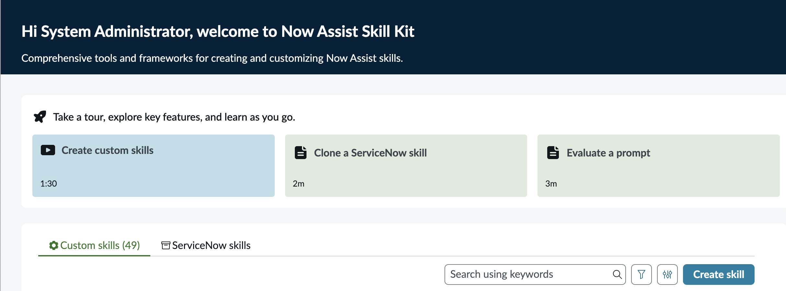
The Custom Skills tab — this is where new skills are born.
Give the skill a name and a description. The description is important — it's used to help build out the LLM prompt for you, and it's also how agents know what the skill does.
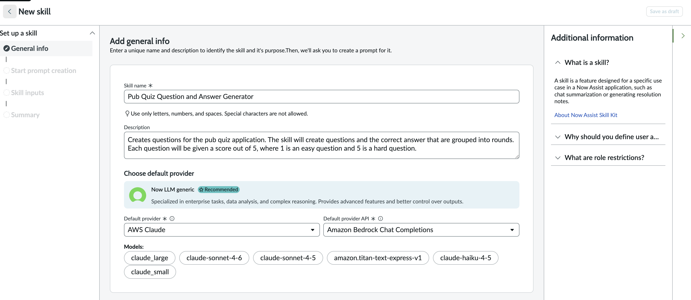
The skill setup — name and description matter more than they look.
You can use your own name and description. The name is less important, but since you're on a shared environment, put your initials in [] at the front or end to identify your skill.
Field
Value
Name
Pub Quiz Question and Answer Generator
Description
Creates questions for the pub quiz application. The skill will create questions and the correct answer that are grouped into rounds. Each question will be given a score out of 5, where 1 is an easy question and 5 is a hard question.
At this stage we're giving the skill an overview of what we want it to do. We'll get into the actual prompt shortly.
Pick the appropriate model. In this scenario I'm using Claude — I find it gives the best output for this kind of task. You can change the model later to try others.
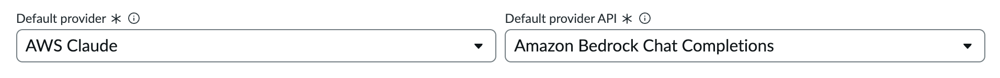
Pick your model — but you can always change your mind.
Scroll down and specify the role that the skill will have when it runs. This is usually the role it needs to access any data it would be given. For our scenario we're not worrying about that, so pick snc_internal and click Continue.
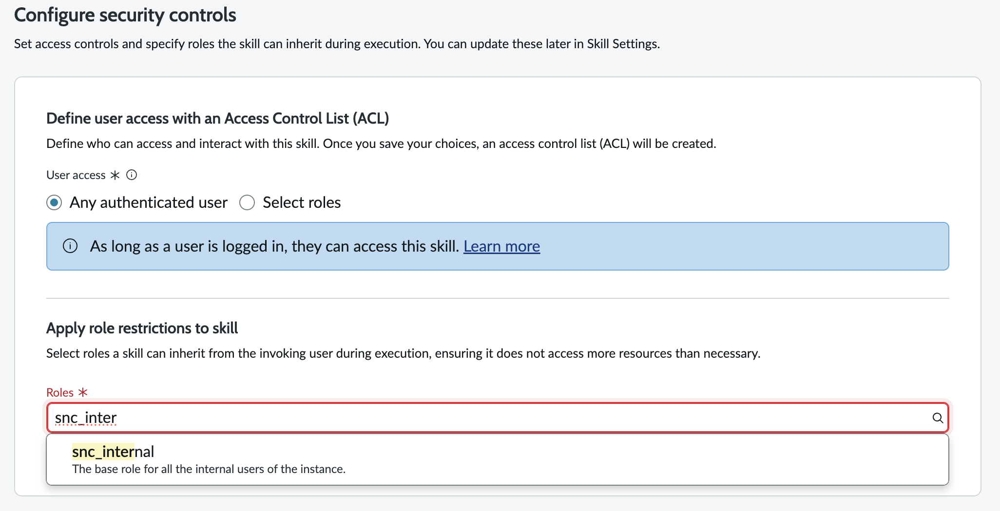
The role determines what data the skill is allowed to see at runtime.
Letting the LLM write its own prompt
You'll now be taken to a screen to help you build out the prompt. We're going to get the LLM to help us — select Use an AI-generated prompt. The system will take the name and description and create an LLM prompt from that.
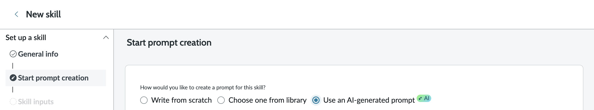
Let the LLM bootstrap your prompt — surprisingly good as a starter for ten.
The prompt that was generated was:
## Role
You are a quiz question creator with expertise in trivia and game design. Your task is to generate pub quiz questions grouped into rounds, each with a difficulty score (1-5), along with the correct answers. Ensure questions vary in topic and complexity while maintaining clarity and fairness.
## Context
The pub quiz application requires the following inputs:
- **{{#input_rounds}}**: Number of rounds to create (e.g., 3 rounds).
- **{{#input_topics}}**: List of topics for questions (e.g., history, science, pop culture).
- **{{#input_difficulty_distribution}}**: Desired distribution of difficulty scores (e.g., 2 easy, 1 medium, 2 hard).
## Instructions
1. **Review Inputs**: Analyze the number of rounds, topics, and difficulty distribution provided.
2. **Generate Questions**:
- Create questions for each round, ensuring they align with the specified topics.
- Assign a difficulty score (1-5) to each question based on complexity.
- Balance the difficulty distribution across rounds (e.g., if 2 easy questions are requested, spread them across rounds).
3. **Validate Clarity**: Ensure questions are unambiguous and answers are verifiable.
4. **Format Output**: Group questions by round, list each question with its score, and provide the correct answer.
## Output
The output should be a plain text list of quiz questions structured as follows:
**Round [X]:**
- **Q[Y]**: [Question text] (Score: [score/5])
Answer: [Correct answer]
Example format:
**Round 1:**
- **Q1**: What is the capital of France? (Score: 1/5)
Answer: Paris
- **Q2**: Who wrote "1984"? (Score: 2/5)
Answer: George Orwell
Ensure questions and answers are accurate, engaging, and match the input criteria.
From our initial description, the AI has done a great job of producing a well-formatted prompt. We'll be tweaking it, but as a starter for ten this is great.
If you're not happy with what gets generated, click the regenerate button to make the LLM have another go. If it's completely wrong, go back and check the description — maybe change that slightly and try again.
Don't forget: if the prompt looks good, click Use Prompt and then Continue. If you forget to click Use Prompt, the prompt will get forgotten.
Adding Skill Inputs
Next we add the parameters we want to feed into the skill — these are called Skill Inputs. Click [+] Add and start filling them in.
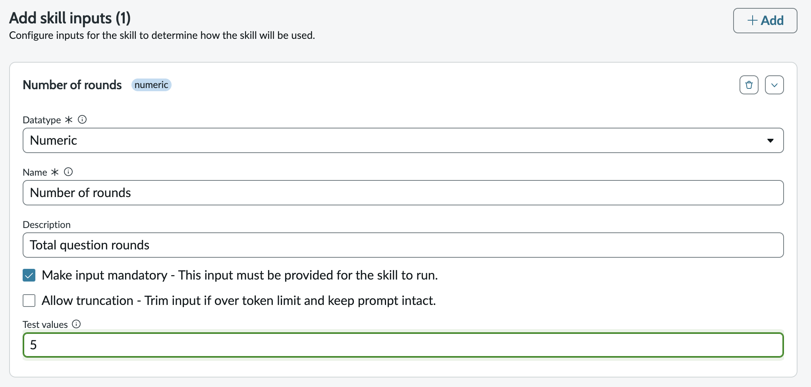
Skill Inputs — the parameters the prompt will reference.
Data Type
Name
Description
Test Value
Numeric
Number of rounds
Total question rounds
5
String
Topics
Topics for rounds
General Knowledge, Music, Culture
String
Difficulty Distribution
What kind of difficulty do we want
Mainly easy, some medium and a few hard
Repeat for all the inputs. Don't worry if you forget one — we can add them later as well.
Click Continue to Summary, then on the summary screen click Finish Setup.
Mapping inputs into the prompt
Now we need to map the inputs into the prompt. You'll see placeholders with {{ }} around them — for example {{#input_rounds}}. Highlight one (or just delete it), then click + Inputs and tools.
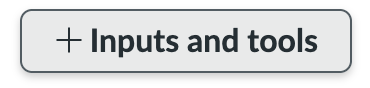
Replace the placeholders with real inputs via the + Inputs and tools menu.
Select the input you want to use.
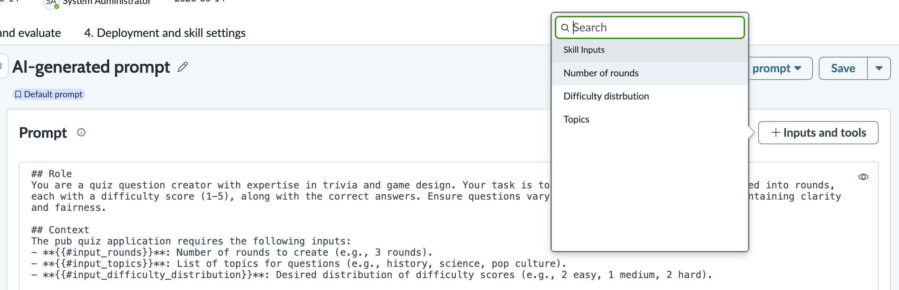
Pick the input and it gets swapped into the prompt.
This replaces the placeholder. Once you've done all of them, your prompt should look like this:
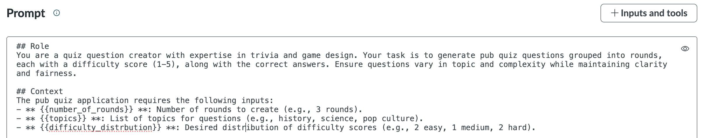
A short snippet showing the inputs cleanly wired into the prompt body.
Think of it as a basic mail merge — the input data is simply dropped in where these placeholders are.
Running the first test
Now we can test the prompt. Click Run Test at the bottom of the page — you'll get a dialog to fill in the parameters, with your defaults pre-populated.
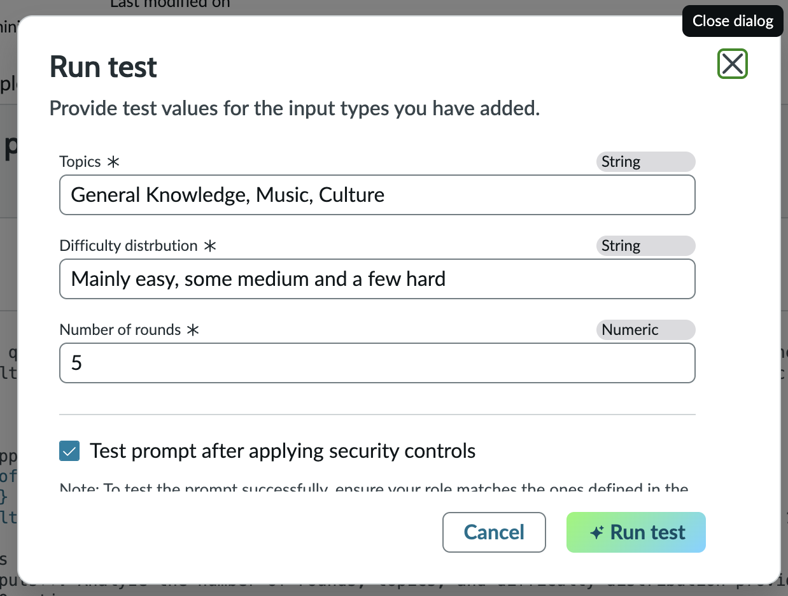
The test dialog — defaults from the Skill Inputs come through automatically.
Click Run Test to see what comes out.
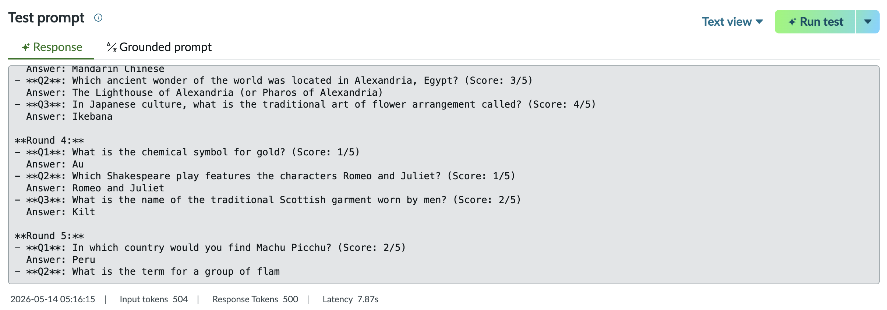
First test result — note the output gets truncated.
The output above has been truncated because the context window for the response is too small. At the bottom of the text box, you'll see that 500 tokens were used to generate the output. We need to increase this.
Scroll back up and find the prompt settings icon on the right-hand side of the window.
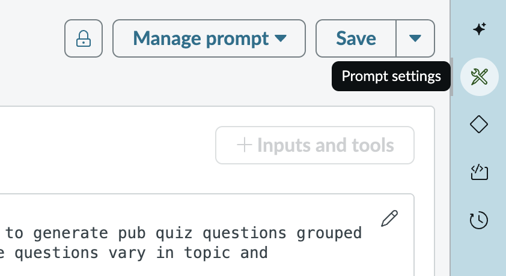
The settings cog — easy to miss, important to find.
Click it. You'll see a Tokens section with a limit of 500 — we need to bump this up.
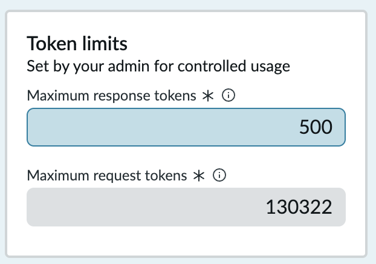
The default 500-token ceiling — fine for a one-liner, no good for a quiz.
Heads up: not all LLM providers will let you change this — some have a much smaller token limit.
Increase the response tokens to 1500.
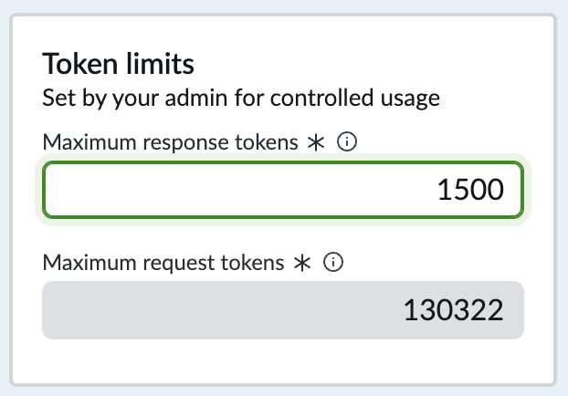
1500 tokens — plenty of room for several rounds.
Run the test again. The output is now complete, and you'll see we're using well under the 1500 limit.
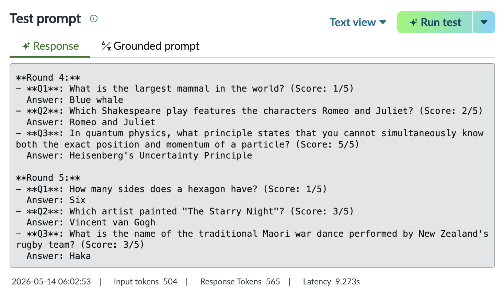
Full output, comfortably under the new ceiling.
✦ ✦ ✦
Section 02 — TuningAdding more information to the prompt
At the moment we're getting 3 questions per round. What if we wanted to increase that? It would be useful to add an extra parameter for the number of questions per round.
Add a new Skill Input for the number of questions per round.
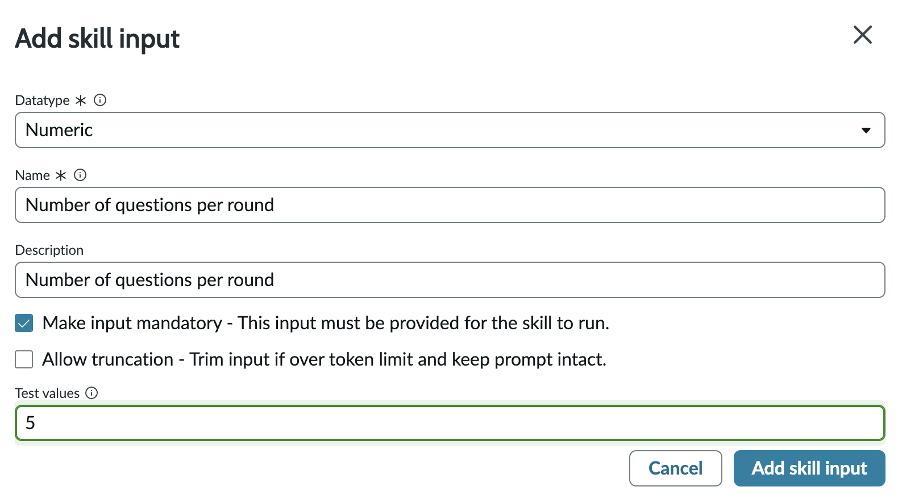
The new input — Numeric, with a sensible default.
Wire it into the prompt:
## Role
You are a quiz question creator with expertise in trivia and game design. Your task is to generate pub quiz questions grouped into rounds, each with a difficulty score (1-5), along with the correct answers. Ensure questions vary in topic and complexity while maintaining clarity and fairness.
## Context
The pub quiz application requires the following inputs:
- **{{number_of_rounds}}**: Number of rounds to create (e.g., 3 rounds).
- **{{number_of_questions_per_round}}**: Number of questions per round (e.g. 5 questions).
- **{{topics}}**: List of topics for questions (e.g., history, science, pop culture).
- **{{difficulty_distribution}}**: Desired distribution of difficulty scores (e.g., 2 easy, 1 medium, 2 hard).
You can see the additional line that's been added.
Run it and see what the output gives.
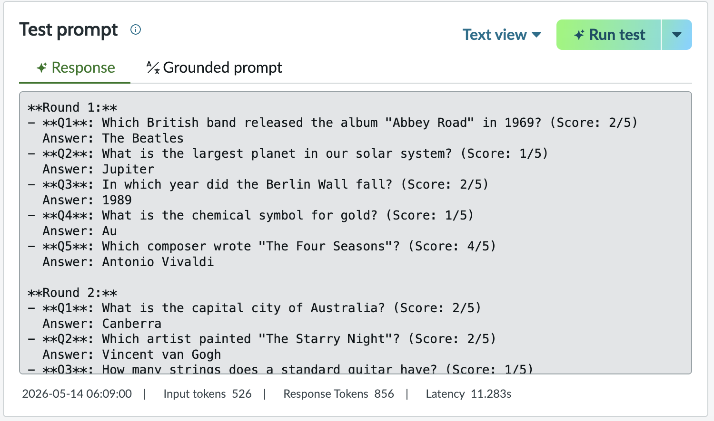
More questions, more tokens — the response is denser now.
As you can see the total response tokens has increased — we asked for more questions, so the model produced more.
✦ ✦ ✦
Section 03 — Structured outputChanging the output to JSON
The output we have is fine to read, but a workflow will struggle to work with it. What we ideally want is some form of JSON that we can parse and use to fill in records. So let's tell the LLM that we want a JSON output.
Change the Output section of the prompt to this — note how we give a structure and an example, which really helps the LLM:
## Output
The output should be a structured JSON format, following this structure:
[{
"Name": [The round name],
[{"Sequence": [Question Number],
"Question": [Question Text],
"Score": [Question Score/5],
"Answer": [Correct answer]
}]
}]
Example output:
[{
"Name": "Round 1",
[{"Sequence": 1,
"Question": "What is the capital of France?",
"Score": 1,
"Answer": "Paris"
}]
}]
Ensure questions and answers are accurate, engaging, and match the input criteria.
Token watch: now that we have structure, you'll notice the output tokens are getting close to our limit. You may want to push it up to 2000.
Have a play — make the prompt your own
In the example below, I tweaked the prompt to give a better JSON structure, a quiz name, and totals for each round and the quiz overall. What else could you get the prompt to do?
## Role
You are a quiz question creator with expertise in trivia and game design. Your task is to generate pub quiz questions grouped into rounds, each with a difficulty score (1-5), along with the correct answers. Ensure questions vary in topic and complexity while maintaining clarity and fairness.
## Context
The pub quiz application requires the following inputs:
- **{{number_of_rounds}}**: Number of rounds to create (e.g., 3 rounds).
- **{{number_of_questions_per_round}}**: Number of questions per round (e.g. 5 questions).
- **{{topics}}**: List of topics for questions (e.g., history, science, pop culture).
- **{{difficulty_distribution}}**: Desired distribution of difficulty scores (e.g., 2 easy, 1 medium, 2 hard).
## Instructions
1. **Review Inputs**: Analyze the number of rounds, topics, and difficulty distribution provided.
2. **Generate Questions**:
- Create questions for each round, ensuring they align with the specified topics.
- Assign a difficulty score (1-5) to each question based on complexity.
- Balance the difficulty distribution across rounds.
3. **Validate Clarity**: Ensure questions are unambiguous and answers are verifiable.
4. **Format Output**: Group questions by round, list each question with its score, and provide the correct answer.
5. Add up the total possible correct answer score and include it at the end of the JSON; also total up each round.
## Output
The output should be a structured JSON format, following this structure:
{"Quiz Name": [Suggest a title for the Quiz],
"Total Score": [Max possible score],
"Rounds": [
{
"Name": [The round name],
"Total Points": [Max Possible Score for the round],
"Questions": [{
"Sequence": [Question Number],
"Question": [Question Text],
"Score": [Question Score/5],
"Answer": [Correct answer]
}]
}
]
}
Ensure questions and answers are accurate, engaging, and match the input criteria.
Before you go any further, take the example output and paste it into a tool like Visual Studio Code or TextMate to validate the structure the LLM has produced. This saves you a lot of time later if the structure isn't valid.
✦ ✦ ✦
Section 04 — PublishFinishing the skill and making it active
Right — we've finished building the skill. Now we want to make it active.
Click Save on the prompt window.
Give the prompt a better name — click the pencil next to "AI-generated prompt" and enter a sensible one.
Click the padlock to the left of the Manage Prompt button to finalise the prompt. Don't worry, we can come back and change it later if we need to.
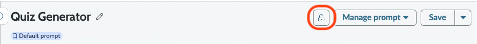
The padlock — final-ish, not final.
Click 4. Deployment and skill settings.
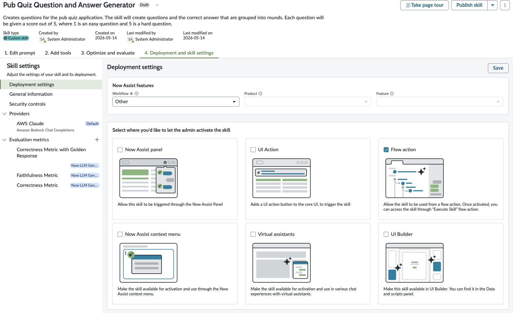
The deployment step — where the skill earns its passport.
Select Flow Action as where you want to use this skill. We could use it in a UI Action, but we'd need to build some scripts to extract the data and fill in the tables — we'll come back to that another day. If your skill fits with one of the other workflows (such as ITSM), you can add it there too. For now, leave it set to Other.
Click Publish Skill at the top of the page. You'll get a dialog like this:
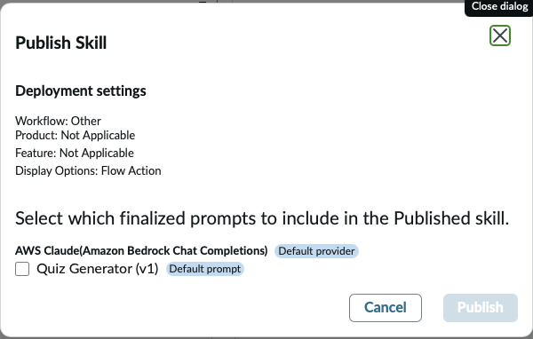
The publish dialog — pick which version goes live.
If you've defined multiple versions (or you're trying out a new LLM), you'll be asked which one should be active. Pick one and click Publish.
Well done — you have built a skill. But now we need to activate it.
At the top of the page there is an Admin menu — click it and select Now Assist Admin.
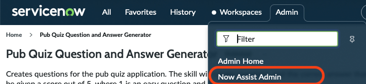
Now Assist Admin — the control panel for activating skills.
Click the Now Assist skills tab and then the Other section on the left.
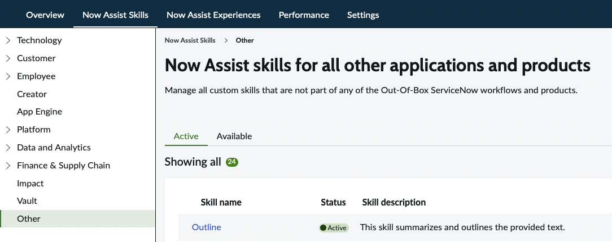
The Other category — where custom skills live until they find a workflow home.
Click the Available tab. Your new "Pub Quiz Question and Answer Generator" skill should show. If it doesn't, go back to the skill and make sure you've published it.
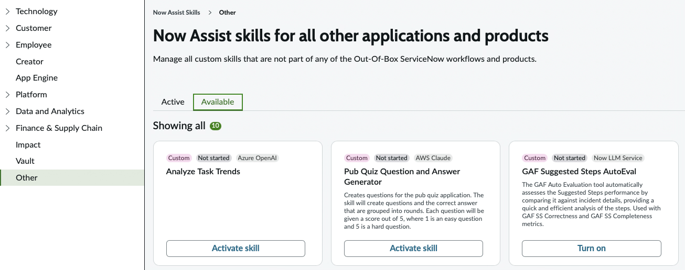
The skill, listed and ready to be switched on.
Click Activate Skill. You'll be asked to activate for the options you chose — in our case just Flow Action. Click the toggle and then Save and Continue.
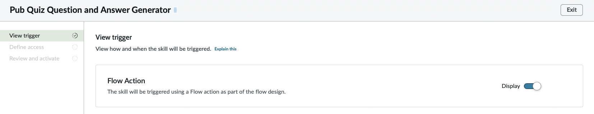
Activate for Flow Action — exactly what we need next.
Review the access requirements — you can add extra roles here if you like. For now just click Save and Continue.
On the review page, click Activate.
The skill is now active and we can start to use it in our flows.
✦ ✦ ✦
Section 05 — Parse and createAn action to turn JSON into records
Now we have our super-useful skill, we need to make use of it. So we're going to create some additional components in our application to leverage it.
Switch back to ServiceNow Studio and start a new Build Agent session — we're going to get Build Agent to do the heavy lifting for us.
Here's the prompt. Notice how we paste in an actual example of the JSON the skill produces — Build Agent needs a few extra prompts when dealing with clustered records like this:
I need you to create an action that accepts the JSON output from my new Skill, parse it and create the records in the rounds and questions tables. When creating records, use getUniqueValue() when finding the sysID for a newly created record and make sure you correctly link all the parent records, so question → round → Quiz. When creating the quiz record, you only need to populate it with the data you have in the JSON. Pass the new Quiz Sys ID back so the remaining data can be added.
Here is an example of the output from the skill:
{
"Quiz Name": "The Ultimate Challenge Quiz",
"Total Score": 85,
"Rounds": [
{
"Name": "Round 1: General Knowledge",
"Total Points": 17,
"Questions": [
{ "Sequence": 1, "Question": "Which ancient wonder of the world was located in Alexandria, Egypt?", "Score": 3, "Answer": "The Lighthouse of Alexandria (Pharos of Alexandria)" },
{ "Sequence": 2, "Question": "What is the smallest country in the world by land area?", "Score": 3, "Answer": "Vatican City" }
]
},
{
"Name": "Round 2: Science & Nature",
"Total Points": 17,
"Questions": [
{ "Sequence": 1, "Question": "What is the chemical symbol for tungsten?", "Score": 3, "Answer": "W" },
{ "Sequence": 2, "Question": "Which planet in our solar system has the most moons?", "Score": 3, "Answer": "Saturn" }
]
}
]
}
Note: I pasted the whole JSON that came out of testing the skill — only a snippet is shown here.
Build Agent has now analysed the request and come up with a plan:
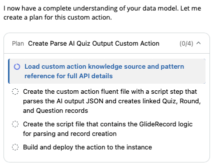
Build Agent's plan — a Flow Action with script logic to walk the JSON.
Testing the action
Build Agent created the action, but it didn't attach the output from the script to the action output — so I just need to wire that up:
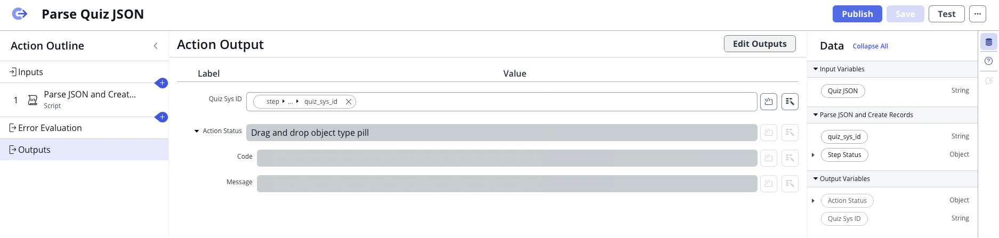
Connect the script's return value to the action output — easy fix.
Now let's test it to see if it works.
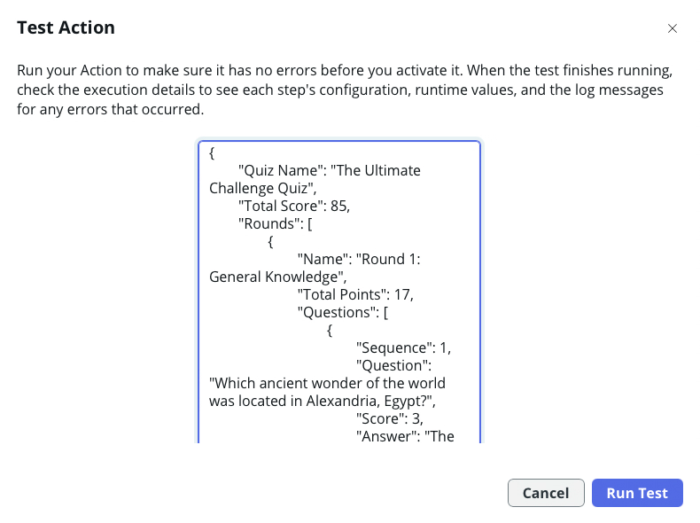
Kicking off the test.
That has completed:
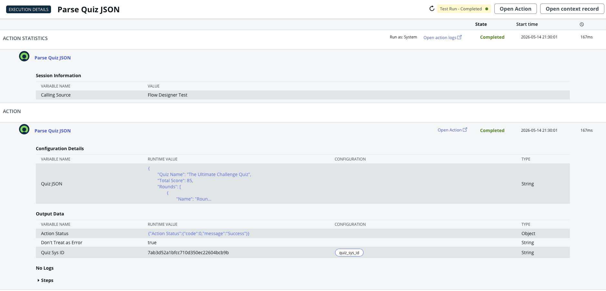
Success — the action returned the sys_id of the new quiz record.
It returned the sys_id of the record it created. Let's go check the data:
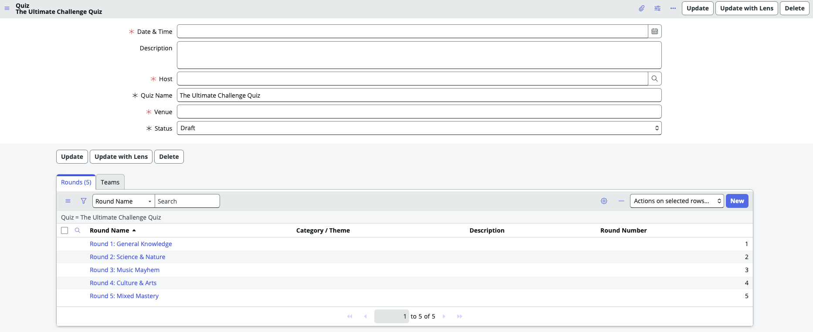
Quiz, rounds and questions — all created from the JSON.
Some fields still need to be filled in — but we'll build a workflow to handle that.
Make sure you publish the action.
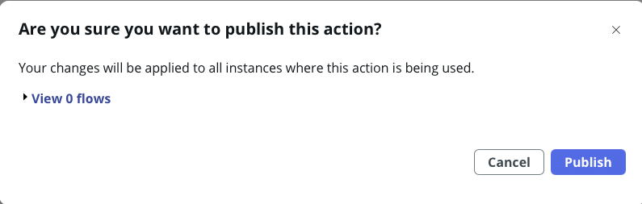
Publish — otherwise it won't be available to use in flows.
Recap
We've created a skill to generate the outline of a quiz for us. It requires some fields to get started:
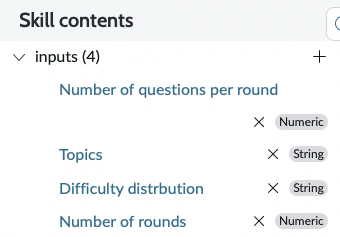
The inputs the skill expects every time it runs.
We also need a few extra pieces of data to finish building the quiz record:
Quiz Date & Time
Location / Venue
Description
So we need a way to gather that extra information and complete the process. One nice approach is to use a catalogue item to give us a logical starting point.
✦ ✦ ✦
Section 06 — Catalogue & flowBuilding the catalogue item that drives it all
Let's start with a prompt to create the catalogue item:
Create me a catalogue item called "Pub Quiz Creator" that has the following fields: "Quiz Date", "Location", "Description", "Number of Rounds", "Number of questions per round", "List of topics", "Difficulty of questions".
Build Agent has created the catalogue item:
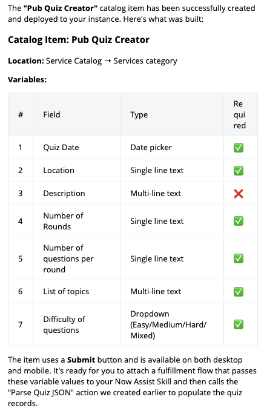
The new Pub Quiz Creator catalogue item.
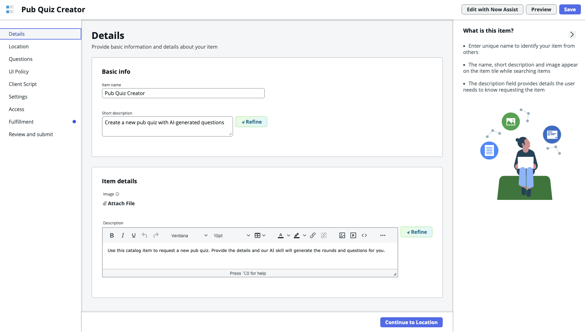
The full form — every input the flow will need.
We can fine-tune this later, but before we publish, we need to create a basic workflow for it to call when someone requests it.
Creating the flow ourselves in Studio
Click the + in the menu bar on the left and select File.
Select Flow under the Automation section.
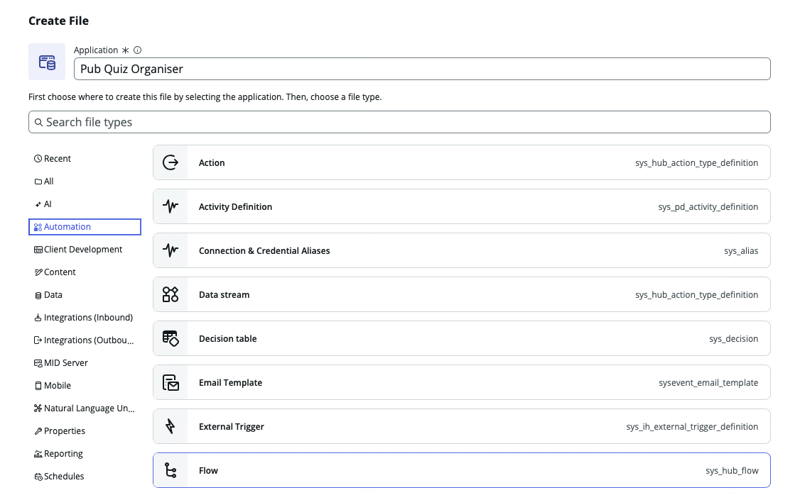
Adding a new Flow file directly from Studio.
Select the Build on your own tab. Give it a name and a description and click Build your own.
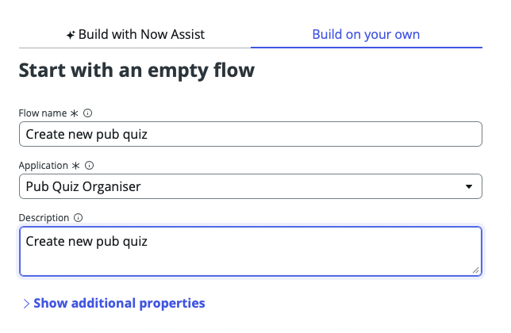
Build on your own — we want full control here.
When the Flow Designer window comes up, the trigger is going to be Application → Service Catalogue.
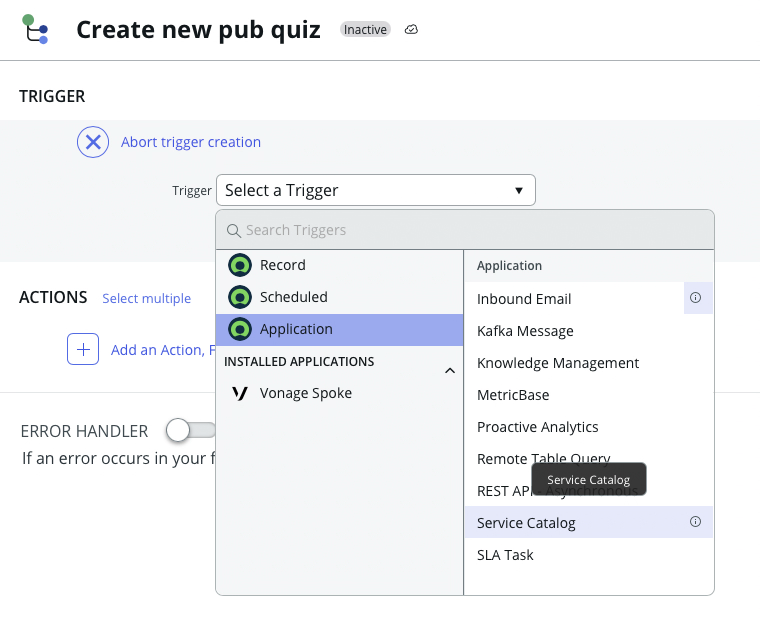
Trigger on Service Catalogue — the flow fires when the cat item is submitted.
Add an action to get the catalogue item variables. Fill in the request record and the template catalogue item, which is our Pub Quiz Creator.
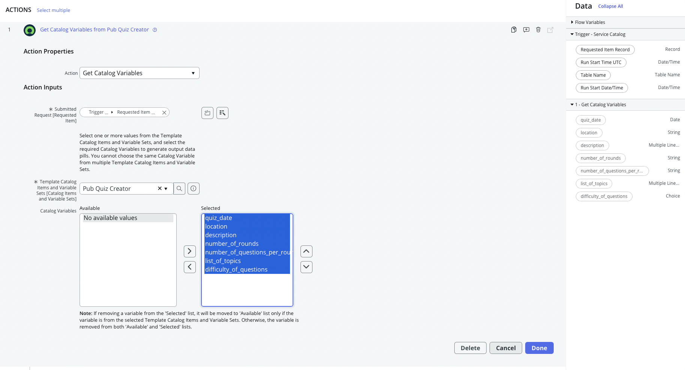
Pull the variables out of the request — the flow's first real job.
Select all the fields you want to use in the flow.
Now we want to execute our skill — this is done by selecting the action Execute Skill.
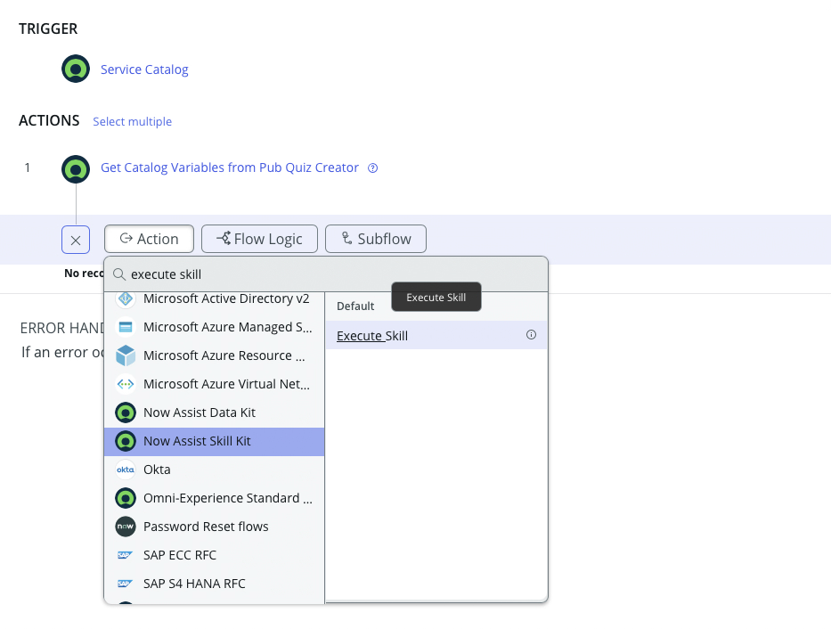
Execute Skill — the bridge between the flow and our published skill.
Pick the skill you want to use. The fields the skill requires are shown with the defaults you specified.
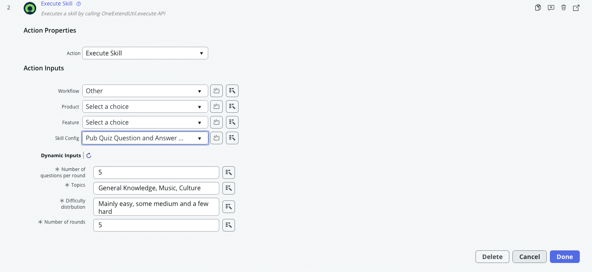
Pick our skill from the list of activated skills.
Map the catalogue item fields into the skill where appropriate.
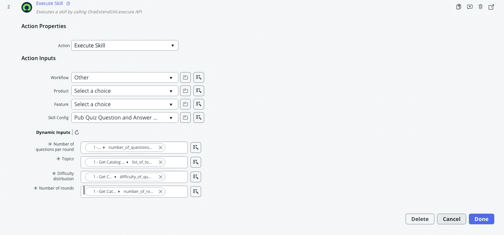
Map the cat item variables into the skill inputs — drag and drop.
Next we want to pass the output from the skill to our action — so let's add the action next.
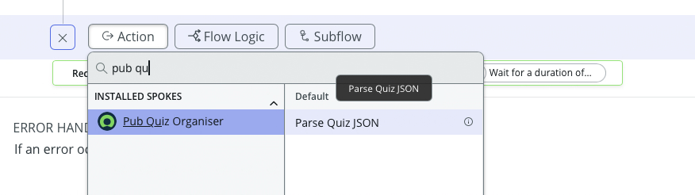
Drop in the action we built earlier.
Drag the response object (under the output from the skill) into the action.
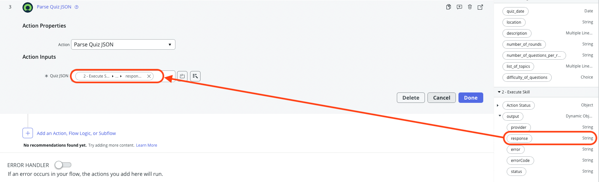
The skill's response object flows straight into our parsing action.
Now take the output from this action and open the quiz record that has been created for us.
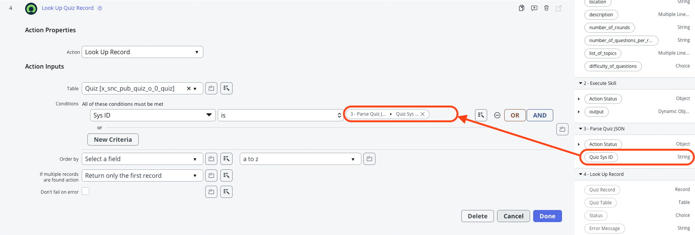
Look up the new quiz record using the sys_id we got back.
Update the quiz record with the additional information (date, location, description).
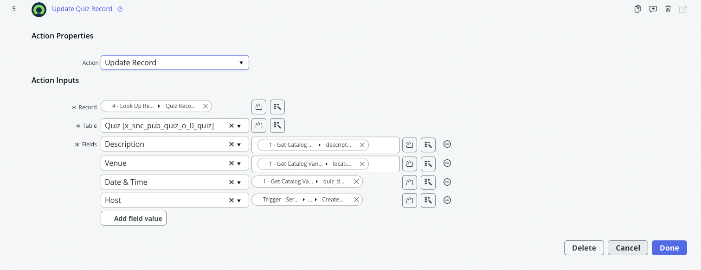
Fill in the bits the LLM didn't know about — date, venue, description.
Activate the flow, then attach it to the catalogue item.
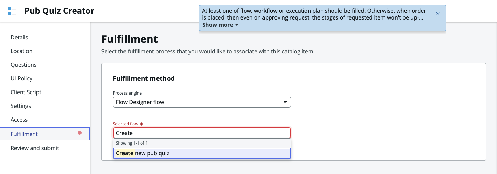
Activate and attach — the cat item now has a real engine behind it.
Submit the catalogue item.
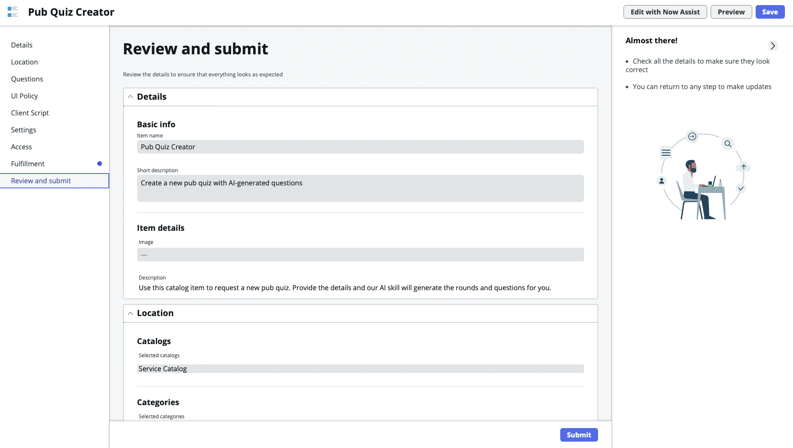
The catalogue item live and ready to receive its first request.
✦ ✦ ✦
Section 07 — End to endLet's test the whole thing
On your instance, open the Employee Service Portal by navigating to:
https://{your_instance}/esc
Start typing "Pub Quiz" into the search box.
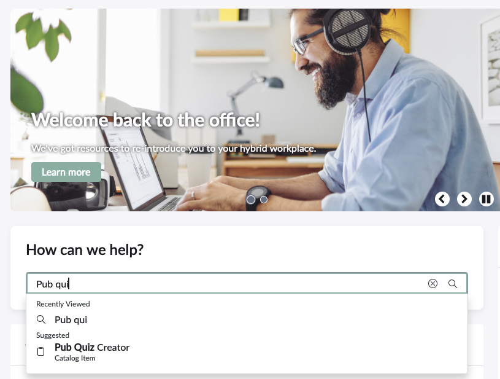
Find the Pub Quiz Creator in the portal.
Fill in the catalogue item and click Submit.
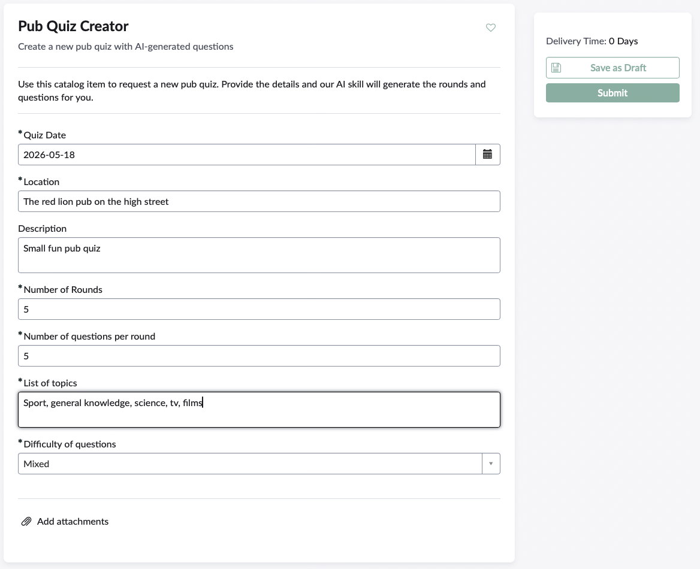
All the fields filled in — and away we go.
Switch back to Studio and look at the flow executions.
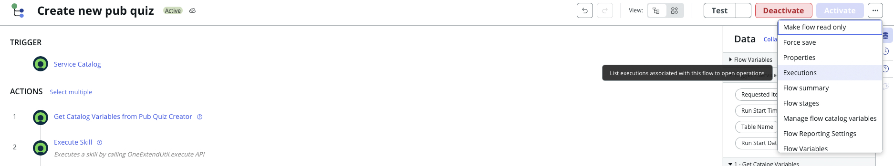
The flow ran — every step ticked through.The detail view — every action's input and output, fully audited.
It looks like it ran — let's go see if we have a new quiz. We do:
A whole quiz — rounds, questions, answers, scores — generated by AI and saved into the platform.
What you've just built: a catalogue-item-driven, AI-powered quiz generator that takes a few parameters and produces a fully-populated quiz in seconds. From here you can layer on agentic behaviour, validation, image generation for question topics, or whatever else you fancy.